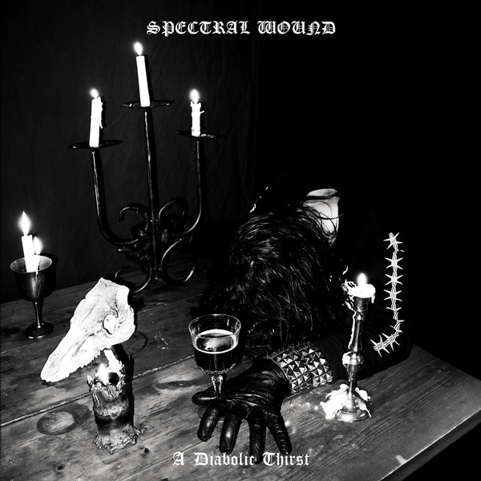

What exactly is black metal?
Black metal is a genre of metal characterized by raw and screechy vocals, no real song structure (I am serious), fast tempos, and poor recording quality (this is no joke). You may hear that black metal is poorly produced, and I will have to say, that yes, it actually is.
There are many subgenres of black metal:
- First Wave Black Metal
- Second Wave Black Metal
- Raw Black Metal
- Atmospheric Black Metal
- War Metal
- Pagan Black Metal
- Dungeon Synth
- Symphonic Black Metal
- Blackgaze (derivative)
- Doom Metal (derivative?)
- Blackened Death Metal (derivative subgenre?)
- Blackened Thrash Metal (derivative subgenre?)
There are other subgenres that either I cannot think of or list due to unallowed topics
Some first-wave bands include:
- Bathory
- Mercyful Fate
- Celtic Frost
Some second-wave bands include:
- Mayhem
- Leviathan
- Gorgoroth
Here's a warning for before you start listening: sadly, a lot of black metal (mainly old) is rooted in offensive themes that I will not elaborate on. I will not be showing any songs or album covers with these themes.
Burzum is sadly one of these bands. Burzum (one-man band), or more specifically, Varg Vikernes, is known as the father of black metal.
So, what are some good starter albums/songs?
Bathory's self-titled album is an excellent place to start. It's more of experimental metal, but I say it's both exprimental and black metal. It was one of my first bm albums and I absolutely love the goat on the cover. By the way, don't be mistaken--it says Bathory, not Batlord. My favorite song off this album would be Sacrifice.
Mork's Katedralen is a good bm album. It's a Norwegian bm band (have I ever mentioned how much bm is rooted or found in Europe?). I never have gone through Mork's discography other than this album but I really like Arv.
Spectral Wound's A Diabolic Thirst is one of my favorite bm albums of all time. It's definitely a lot newer than the previously mentioned albums, so I would have to say that the recording quality is definitely better (though that does not mean that all modern bm has excellent recording quality). My favorite song off this album would be Frigid and Spellbound.

If you find these too screechy or you don't like the instruments, I highly recommend atmospheric black metal
There is a specific subgenre of atmospheric bm that I enjoy, though it is best that I do not name it. It can still be called atmospheric bm, nonetheless.
Atmospheric bm would have to be my favorite subgenre; it's often gloomy, whether it's through the actual sound or lyrics. There is not much I can show you regarding this because there are certain themes that I should not be discussing, if you understand what I mean.
Doom metal is a very similar genre (or subgenre? I don't know anymore) that combines death metal and black metal (mostly atmospheric) elements. Occasionally, there are also industrial (industrial in general or industrial metal) elements.
Throane's Plus une main à mordre is one of my favorite atmospheric albums. I am putting a disclaimer here that I do not know what the lyrics are about or what any of it means because it's all in French (which is the only reason why I am confident in sharing this)
So what if you don't like either suggestions?
Dungeon synth is amazing, and so is music involving synths in general, but dungeon synth is basically gloomy electronic music that occasionally involved bm vocals. I am not talking about dark wave-gloomy, I am talking about the kind of gloomy music that you often find in creepy dungeon levels. It literally sounds like dungeon music. It is called dungeon synth.
Erythrite Throne's A Ceremonial Offering to the Black Moon is my favorite dungeon synth album.
Dungeon synth isn't a very popular genre, but you can find a lot more stuff on Bandcamp.